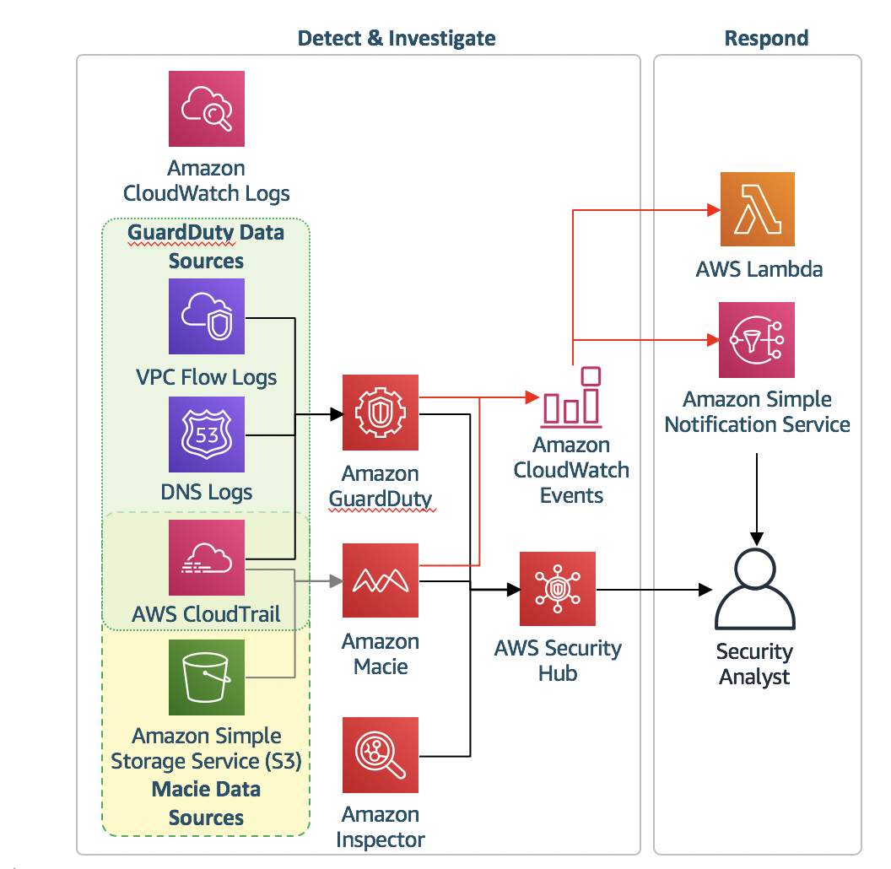

モジュール 1: 環境構築と設定
最初のモジュールでは、検知と対応の統制の初期設定をします。2 つの CloudFormation テンプレートのうち、1つ目を実行して、これらの Control のいくつかの作成を自動化し、残りのものを手動で設定します。
AWS CloudFormation テンプレートのデプロイ
シナリオを開始して環境を設定するには、モジュール 1 の CloudFormation テンプレートを実行する必要があります。
CloudFormation Template実行する前に こちら.もご確認ください。
| リージョン | デプロイ |
|---|---|
| US West 2 (Oregon) |  |
-
上の Deploy to AWS (AWS へのデプロイ) ボタンをクリックします。これにより、テンプレートを実行するコンソールに自動的に移動します。
-
Specify Details (詳細の指定) セクションで、以下に示す必要なパラメータを入力します。
Parameter Value Stack name ThreatDetectionWksp-Env-Setup Email Address A valid email address -
パラメータを入力したら、Next (次) をクリックし、もう一度 Next (次) をクリックします (このページの設定はデフォルトのままにします)。
-
最後に、テンプレートによって IAM ロールが作成されることに確認し、Create (作成) をクリックします。

これによって CloudFormation コンソールに戻ります。ページを更新して、作成を開始するスタックを確認することができます。次に進む前に、スタックが以下に示すように CREATE_COMPLETE ステータスであることを確認します。
SNS から、サブスクリプションを確認するように依頼するメールが届きます。ワークショップ中に AWS のサービスからメールアラートを受信できるように、サブスクリプションを確認します。
アラートメールの送信元は no-reply@sns.amazonaws.com になります。受信できない場合は、ご利用のメール環境でフォルダ振り分けがされていたり、SPAM判定をされていたりしないかご確認ください。
Amazon CloudWatch イベントルールおよび自動応答の設定
先ほど実行した CloudFormation テンプレートによって、アラートおよび応答のための 3 つの CloudWatch イベントルール が作成されました。以下の手順で最終的なルールを作成します。この後、メール通知を受け取り、脅威に対応するために AWS Lambda 関数をトリガーするための必要なすべてのルールが設定されます。
以下は、コンソールを通じてこのルールを作成する手順ですが、Amazon GuardDuty ドキュメントを確認することで、プログラムでルールを実行する方法についても詳しく知ることができます
- CloudWatch コンソール (us-west-2) を開きます。
-
左のナビゲーションペインで、Events (イベント) の下の Rules (ルール) をクリックします。
現在のルールは何を実行するように設定されていますか?
-
Create Rule (ルールの作成) をクリックします。
-
Event Pattern (イベントパターン) の下で、Build event pattern to match events by service (サービス別のイベントに一致するイベントパターンの構築) をクリックし、ドロップダウンの Custom event pattern (カスタムイベントパターン) を選択します。以下のカスタムイベントパターンを貼り付けます。
{ "source": [ "aws.guardduty" ], "detail": { "type": [ "UnauthorizedAccess:EC2/MaliciousIPCaller.Custom" ] } }
ターゲットについては、Add Target (ターゲットの追加) をクリックし、Lambda Function (Lambda 関数) を選択してから threat-detection-wksp-remediation-nacl を選択します。Configure details (詳細の構成) をクリックします。
- Configure rule details (ルールの詳細の構成) 画面で、Name (名前) および Description (説明) を入力します (以下を参照)。
- Name (名前): threat-detection-wksp-guardduty-finding-ec2-maliciousip
- Description (説明): GuardDuty の検出結果: UnauthorizedAccess:EC2/MaliciousIPCaller.Custom
- Create rule (ルールの作成) をクリックします。
-
オプション: Lambda関数が何をしているのかを見てみましょう。Open the Lambda コンソールを開きます. threat-detection-wksp-remediation-nacl という名前の関数をクリックします。
この関数は何を行う関数ですか?
Threat-detection-wksp-remediation-inspector 関数は何を行いますか?
Amazon GuardDuty の有効化
次のステップは、Amazon GuardDuty の有効化です。Amazon GuardDuty は、悪意のある行動や不正な行動がないか、環境を継続的に監視します。
-
Amazon GuardDuty コンソール (us-west-2) に移動します。
-
Get Started (開始) ボタンをクリックします。
-
次の画面で、Enable GuardDuty (GuardDuty の有効化) ボタンをクリックします。
GuardDuty が有効になります。CloudTrail ログ、VPC フローログ、および DNS クエリログが継続的に監視され、環境に脅威がないかチェックされます
Amazon Macie の有効化
あなたは機密データを S3 に保管するつもりです。Amazon Macie をすぐに有効にしましょう。Macie は、データアクセスアクティビティを継続的に監視して異常がないかをチェックするセキュリティサービスです。不正アクセスや不注意によるデータ漏洩のリスクを検出するとアラートを生成します。
-
Amazon Macie コンソール (us-west-2) に移動します。
-
Get Started (開始) をクリックします。
-
Macie を有効にすると、サービスにリンクされたロールが作成されます。ロールの権限を確認する場合、View service role permissions (サービスロールのアクセス許可の表示) をクリックします。
-
Enable Macie (Macie の有効化) をクリックします。
データの検出と分類のための Amazon Macie の設定
Macie は、機密データを自動で検出および分類するためにも使用されます。Macie が有効になったので、S3 バケットのデータを分類するための統合を設定します。
-
Amazon Macie コンソールで、左のナビゲーションの Integrations (統合) をクリックします。
-
AWS アカウント ID (1 つだけあります) を探して Select (選択) をクリックします。
-
Add (追加) をクリックし、次の画面で“-data”で終了する S3 バケットの横にあるチェックボックスをクリックします。Add (追加) をクリックします。
-
ここのオプションはデフォルトのままにして Review (レビュー) をクリックします。
-
次の画面で Start Classification (分類の開始) をクリックします。
-
最後に Done (終了) をクリックします。Macie が有効になり、データの検出、分類、および保護を開始しました。
AWS Security Hub の有効化
ここまでで Detective Control の設定が完了したので、AWS Security Hub を有効にする必要があります。これにより、AWS 環境のセキュリティおよびコンプライアンスを包括的に確認できます。
-
AWS Security Hub コンソールに移動します.
-
Enable Security Hub (Security Hub の有効化) ボタンをクリックします。
-
次の画面で、Enable AWS Security Hub (AWS Security Hub の有効化) ボタンをクリックします。
AWS Security Hub が有効になりました。これまで有効化したセキュリティサービスからの検出結果の収集および集約が開始されます。
アーキテクチャの概要
環境が構成され、操作の準備ができました。Detective Control の構成は以下のようになっています。

環境を適切に設定したら、次のモジュールに進んでください。